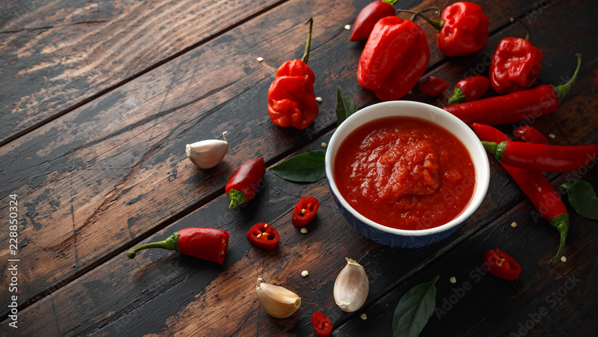

Mango Habanero Hot Sauce

Description
This is an amazing and breath taking mango habanero hot sauce recipe that can give a kick to any dish!
Ingredients
- 6 Habanero peppers
- 1 cup chopped mango pieces (approx. 1 large mango)
- 1 small onion
- 2 garlic cloves
- 1" piece of ginger
- 3/4 cup white vinegar
- 1/2 cup water
- 1/2 teaspoon salt
- olive oil
Steps
- Give the habaneros a good rinse and de-stem them. Be sure to use caution (or gloves) when handling habanero peppers.
- Chop up the mango. I usually start by cutting off the side cheeks, leaving a middle sliver that holds the pit. Score each cheek with a knife, similar to scoring an avocado half. Press the cheek down on the cutting board and slice off the squared bits of mango. For the middle sliver you can run a paring knife along the inside edge of the skin to quickly remove it. Then start on the outside and slice off any juicy chunks of mango until you reach the hardened pit.
- Saute a roughly chopped onion and 2 whole, peeled garlic cloves in a glug of oil. It's best to use a non-reactive pan for this recipe because of the vinegar.
- Once the onion is starting to brown you can add the 6 habanero peppers, 1 cup chopped mango pieces, 1" piece of peeled ginger, 3/4 cup white vinegar, 1/2 cup water, and 1/2 teaspoon salt. Let the mixture simmer for a few minutes or until everything is at a uniform temp.
- Add the mixture to a blender or food processor and combine well. Take a taste. It will be plenty hot so consider yourself warned!
- In the past I've had to add more mango to get its flavor to shine through the heat, so feel free to add a few more chunks of mango if the heat is dominating. But for this batch a single cup from a large mango did the job.
- Store in hot sauce bottles in the fridge where it will keep for at least a month. You'll have enough hot sauce to fill 2-3 of the 5oz. bottles.